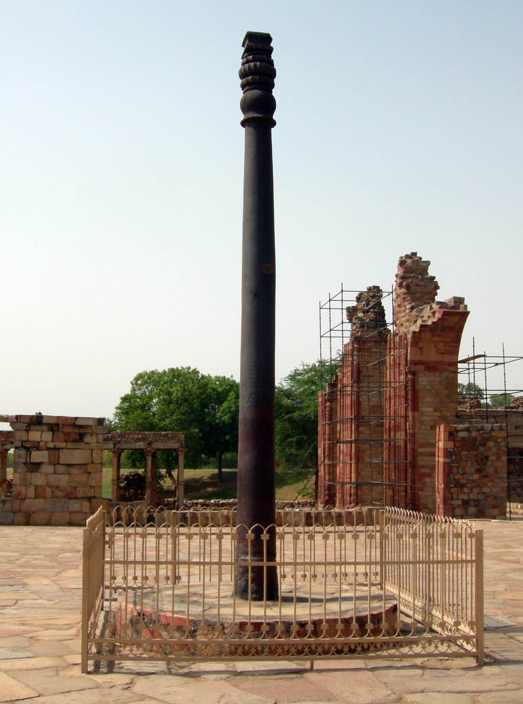

India gate- India Gate, an important monument of the city, is a memorial built in commemoration of more than 80,000 Indian soldiers who were killed during World War I. The monument is an imposing 42 meters high arch and was designed by the famous architect Edwin Lutyens. India gate was earlier named All India War Memorial.
India gate- India Gate, an important monument of the city, is a memorial built in commemoration of more than 80,000 Indian soldiers who were killed during World War I. The monument is an imposing 42 meters high arch and was designed by the famous architect Edwin Lutyens. India gate was earlier named All India War Memorial.
 Vivekananda Rock Memorial-Vivekananda Rock Memorial is a monument in Kanyakumari, India.It was built in honour of Swami Vivekananda, who is said to have attained enlightenment on the rock. Vivekananda Rock Memorial is a monument in Kanyakumari, India. It was built in 1970 in honour of Swami Vivekananda, who is said to have attained enlightenment on the rock.According to legends, it was on this rock that Goddess Kanyakumari (Parvathi) performed tapas in devotion of lord Shiva. A meditation hall known as Dhyana Mandapam is also attached to the memorial for visitors to meditate. The design of the mandapa incorporates different styles of temple architecture from all over India. The rocks are surrounded by the Laccadive Sea. The memorial consists of two main structures, the Vivekananda Mandapam and the Shripada Mandapam.
Vivekananda Rock Memorial-Vivekananda Rock Memorial is a monument in Kanyakumari, India.It was built in honour of Swami Vivekananda, who is said to have attained enlightenment on the rock. Vivekananda Rock Memorial is a monument in Kanyakumari, India. It was built in 1970 in honour of Swami Vivekananda, who is said to have attained enlightenment on the rock.According to legends, it was on this rock that Goddess Kanyakumari (Parvathi) performed tapas in devotion of lord Shiva. A meditation hall known as Dhyana Mandapam is also attached to the memorial for visitors to meditate. The design of the mandapa incorporates different styles of temple architecture from all over India. The rocks are surrounded by the Laccadive Sea. The memorial consists of two main structures, the Vivekananda Mandapam and the Shripada Mandapam.
 Qutb Minar-The Qutb Minar, also spelled as Qutub Minar and Qutab Minar, is a minaret and "victory tower" that forms part of the Qutb complex. It is a UNESCO World Heritage Site in the Mehrauli area of New Delhi, India.[3][4] It is one of most visited tourist spots in the city due to it being one of the earliest that survives in the Indian subcontinent.[5][6][3]
Qutb Minar-The Qutb Minar, also spelled as Qutub Minar and Qutab Minar, is a minaret and "victory tower" that forms part of the Qutb complex. It is a UNESCO World Heritage Site in the Mehrauli area of New Delhi, India.[3][4] It is one of most visited tourist spots in the city due to it being one of the earliest that survives in the Indian subcontinent.[5][6][3]
 Iron pillar of Delhi-The iron pillar of Delhi is a structure 23 feet 8 inches high with 16 inches diameter that was constructed by Chandragupta II. It is famous for the rust-resistant composition of the metals used in its construction.